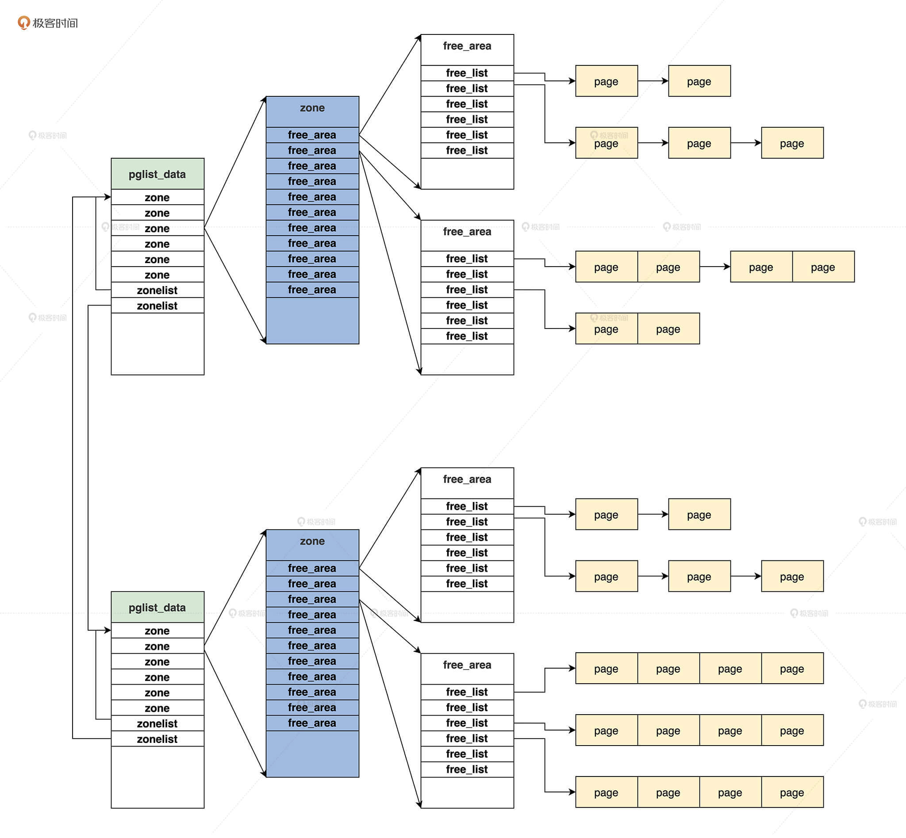

- 00 开篇词 为什么要学写一个操作系统？.md.html
- 00 编辑手记 升级认知，迭代自己的操作系统.md.html
- 01 程序的运行过程：从代码到机器运行.md.html
- 02 几行汇编几行C：实现一个最简单的内核.md.html
- 03 黑盒之中有什么：内核结构与设计.md.html
- 04 震撼的Linux全景图：业界成熟的内核架构长什么样？.md.html
- 05 CPU工作模式：执行程序的三种模式.md.html
- 06 虚幻与真实：程序中的地址如何转换？.md.html
- 07 Cache与内存：程序放在哪儿？.md.html
- 08 锁：并发操作中，解决数据同步的四种方法.md.html
- 09 瞧一瞧Linux：Linux的自旋锁和信号量如何实现？.md.html
- 10 设置工作模式与环境（上）：建立计算机.md.html
- 11 设置工作模式与环境（中）：建造二级引导器.md.html
- 12 设置工作模式与环境（下）：探查和收集信息.md.html
- 13 第一个C函数：如何实现板级初始化？.md.html
- 14 Linux初始化（上）：GRUB与vmlinuz的结构.md.html
- 15 Linux初始化（下）：从_start到第一个进程.md.html
- 16 划分土地（上）：如何划分与组织内存？.md.html
- 17 划分土地（中）：如何实现内存页面初始化？.md.html
- 18 划分土地（下）：如何实现内存页的分配与释放？.md.html
- 19 土地不能浪费：如何管理内存对象？.md.html
- 20 土地需求扩大与保障：如何表示虚拟内存？.md.html
- 21 土地需求扩大与保障：如何分配和释放虚拟内存？.md.html
- 22 瞧一瞧Linux：伙伴系统如何分配内存？.md.html
- 23 瞧一瞧Linux：SLAB如何分配内存？.md.html
- 24 活动的描述：到底什么是进程？.md.html
- 25 多个活动要安排（上）：多进程如何调度？.md.html
- 26 多个活动要安排（下）：如何实现进程的等待与唤醒机制？.md.html
- 27 瞧一瞧Linux：Linux如何实现进程与进程调度_.md.html
- 28 部门分类：如何表示设备类型与设备驱动？.md.html
- 29 部门建立：如何在内核中注册设备？.md.html
- 30 部门响应：设备如何处理内核I_O包？.md.html
- 31 瞧一瞧Linux：如何获取所有设备信息？.md.html
- 32 仓库结构：如何组织文件_.md.html
- 33 仓库划分：文件系统的格式化操作.md.html
- 34 仓库管理：如何实现文件的六大基本操作？.md.html
- 35 瞧一瞧Linux：虚拟文件系统如何管理文件？.md.html
- 36 从URL到网卡：如何全局观察网络数据流动？.md.html
- 37 从内核到应用：网络数据在内核中如何流转.md.html
- 38 从单排到团战：详解操作系统的宏观网络架构.md.html
- 39 瞧一瞧Linux：详解socket实现与网络编程接口.md.html
- 40 瞧一瞧Linux：详解socket的接口实现.md.html
- 41 服务接口：如何搭建沟通桥梁？.md.html
- 42 瞧一瞧Linux：如何实现系统API？.md.html
- 43 虚拟机内核：KVM是什么？.md.html
- 44 容器：如何理解容器的实现机制？.md.html
- 45 ARM新宠：苹果的M1芯片因何而快？.md.html
- 46 AArch64体系：ARM最新编程架构模型剖析.md.html
- LMOS来信：第二季课程带你“手撕”计算机基础.md.html
- 大咖助场 以无法为有法，以无限为有限.md.html
- 用户故事 yiyang：我的上机实验“爬坑指南”.md.html
- 用户故事 成为面向“知识库”的工程师.md.html
- 用户故事 技术人如何做选择，路才越走越宽？.md.html
- 用户故事 操作系统发烧友：看不懂？因为你没动手.md.html
- 用户故事 用好动态调试，助力课程学习.md.html
- 用户故事 艾同学：路虽远，行则将至.md.html
- 结束语 生活可以一地鸡毛，但操作系统却是心中的光.md.html
- 捐赠
22 瞧一瞧Linux：伙伴系统如何分配内存？
你好，我是LMOS。
前面我们实现了Cosmos的内存管理组件，相信你对计算机内存管理已经有了相当深刻的认识和见解。那么，像Linux这样的成熟操作系统，又是怎样实现内存管理的呢？
这就要说到Linux系统中，用来管理物理内存页面的伙伴系统，以及负责分配比页更小的内存对象的SLAB分配器了。
我会通过两节课给你理清这两种内存管理技术，这节课我们先来说说伙伴系统，下节课再讲SLAB。只要你紧跟我的思路，再加上前面的学习，真正理解这两种技术也并不难。
伙伴系统
伙伴系统源于Sun公司的Solaris操作系统，是Solaris操作系统上极为优秀的物理内存页面管理算法。
但是，好东西总是容易被别人窃取或者效仿，伙伴系统也成了Linux的物理内存管理算法。由于Linux的开放和非赢利，这自然无可厚非，这不得不让我们想起了鲁迅《孔乙己》中的：“窃书不算偷”。
那Linux上伙伴系统算法是怎样实现的呢？我们不妨从一些重要的数据结构开始入手。
怎样表示一个页
Linux也是使用分页机制管理物理内存的，即Linux把物理内存分成4KB大小的页面进行管理。那Linux用了一个什么样的数据结构，表示一个页呢？
早期Linux使用了位图，后来使用了字节数组，但是现在Linux定义了一个page结构体来表示一个页，代码如下所示。
struct page {
//page结构体的标志，它决定页面是什么状态
unsigned long flags;
union {
struct {
//挂载上级结构的链表
struct list_head lru;
//用于文件系统，address_space结构描述上文件占用了哪些内存页面
struct address_space *mapping;
pgoff_t index;
unsigned long private;
};
//DMA设备的地址
struct {
dma_addr_t dma_addr;
};
//当页面用于内存对象时指向相关的数据结构
struct {
union {
struct list_head slab_list;
struct {
struct page *next;
#ifdef CONFIG_64BIT
int pages;
int pobjects;
#else
short int pages;
short int pobjects;
#endif
};
};
//指向管理SLAB的结构kmem_cache
struct kmem_cache *slab_cache;
//指向SLAB的第一个对象
void *freelist;
union {
void *s_mem;
unsigned long counters;
struct {
unsigned inuse:16;
unsigned objects:15;
unsigned frozen:1;
};
};
};
//用于页表映射相关的字段
struct {
unsigned long _pt_pad_1;
pgtable_t pmd_huge_pte;
unsigned long _pt_pad_2;
union {
struct mm_struct *pt_mm;
atomic_t pt_frag_refcount;
};
//自旋锁
#if ALLOC_SPLIT_PTLOCKS
spinlock_t *ptl;
#else
spinlock_t ptl;
#endif
};
//用于设备映射
struct {
struct dev_pagemap *pgmap;
void *zone_device_data;
};
struct rcu_head rcu_head;
};
//页面引用计数
atomic_t _refcount;
#ifdef LAST_CPUPID_NOT_IN_PAGE_FLAGS
int _last_cpupid;
#endif
} _struct_page_alignment;
这个page结构看上去非常巨大，信息量很多，但其实它占用的内存很少，根据Linux内核配置选项不同，占用20～40个字节空间。page结构大量使用了C语言union联合体定义结构字段，这个联合体的大小，要根据它里面占用内存最大的变量来决定。
不难猜出，使用过程中，page结构正是通过flags表示它处于哪种状态，根据不同的状态来使用union联合体的变量表示的数据信息。如果page处于空闲状态，它就会使用union联合体中的lru字段，挂载到对应空闲链表中。
一“页”障目，不见泰山，这里我们不需要了解page结构的所有细节，我们只需要知道Linux内核中，一个page结构表示一个物理内存页面就行了。
怎样表示一个区
Linux内核中也有区的逻辑概念，因为硬件的限制，Linux内核不能对所有的物理内存页统一对待，所以就把属性相同物理内存页面，归结到了一个区中。
不同硬件平台，区的划分也不一样。比如在32位的x86平台中，一些使用DMA的设备只能访问0~16MB的物理空间，因此将0~16MB划分为DMA区。
高内存区则适用于要访问的物理地址空间大于虚拟地址空间，Linux内核不能建立直接映射的情况。除开这两个内存区，物理内存中剩余的页面就划分到常规内存区了。有的平台没有DMA区，64位的x86平台则没有高内存区。
在Linux里可以查看自己机器上的内存区，指令如下图所示。

Linux内核用zone数据结构表示一个区，代码如下所示。
enum migratetype {
MIGRATE_UNMOVABLE, //不能移动的
MIGRATE_MOVABLE, //可移动和
MIGRATE_RECLAIMABLE,
MIGRATE_PCPTYPES, //属于pcp list的
MIGRATE_HIGHATOMIC = MIGRATE_PCPTYPES,
#ifdef CONFIG_CMA
MIGRATE_CMA, //属于CMA区的
#endif
#ifdef CONFIG_MEMORY_ISOLATION
MIGRATE_ISOLATE,
#endif
MIGRATE_TYPES
};
//页面空闲链表头
struct free_area {
struct list_head free_list[MIGRATE_TYPES];
unsigned long nr_free;
};
struct zone {
unsigned long _watermark[NR_WMARK];
unsigned long watermark_boost;
//预留的内存页面数
unsigned long nr_reserved_highatomic;
//内存区属于哪个内存节点
#ifdef CONFIG_NUMA
int node;
#endif
struct pglist_data *zone_pgdat;
//内存区开始的page结构数组的开始下标
unsigned long zone_start_pfn;
atomic_long_t managed_pages;
//内存区总的页面数
unsigned long spanned_pages;
//内存区存在的页面数
unsigned long present_pages;
//内存区名字
const char *name;
//挂载页面page结构的链表
struct free_area free_area[MAX_ORDER];
//内存区的标志
unsigned long flags;
/*保护free_area的自旋锁*/
spinlock_t lock;
};
为了节约你的时间，我只列出了需要我们关注的字段。其中_watermark表示内存页面总量的水位线有min, low, high三种状态，可以作为启动内存页面回收的判断标准。spanned_pages是该内存区总的页面数。
为什么要有个present_pages字段表示页面真正存在呢？那是因为一些内存区中存在内存空洞，空洞对应的page结构不能用。你可以做个对比，我们的Cosmos不会对内存空洞建立msadsc_t，避免浪费内存。
在zone结构中我们真正要关注的是free_area结构的数组，这个数组就是用于实现伙伴系统的。其中MAX_ORDER的值默认为11，分别表示挂载地址连续的page结构数目为1，2，4，8，16，32……最大为1024。
而free_area结构中又是一个list_head链表数组，该数组将具有相同迁移类型的page结构尽可能地分组，有的页面可以迁移，有的不可以迁移，同一类型的所有相同order的page结构，就构成了一组page结构块。
分配的时候，会先按请求的migratetype从对应的page结构块中寻找，如果不成功，才会从其他migratetype的page结构块中分配。这样做是为了让内存页迁移更加高效，可以有效降低内存碎片。
zone结构中还有一个指针，指向pglist_data结构，这个结构也很重要，下面我们一起去研究它。
怎样表示一个内存节点
在了解Linux内存节点数据结构之前，我们先要了解NUMA。
在很多服务器和大型计算机上，如果物理内存是分布式的，由多个计算节点组成，那么每个CPU核都会有自己的本地内存，CPU在访问它的本地内存的时候就比较快，访问其他CPU核内存的时候就比较慢，这种体系结构被称为Non-Uniform Memory Access（NUMA）。
逻辑如下图所示。
Linux对NUMA进行了抽象，它可以将一整块连续物理内存的划分成几个内存节点，也可以把不是连续的物理内存当成真正的NUMA。
那么Linux使用什么数据结构表示一个内存节点呢？请看代码，如下所示。
enum {
ZONELIST_FALLBACK,
#ifdef CONFIG_NUMA
ZONELIST_NOFALLBACK,
#endif
MAX_ZONELISTS
};
struct zoneref {
struct zone *zone;//内存区指针
int zone_idx; //内存区对应的索引
};
struct zonelist {
struct zoneref _zonerefs[MAX_ZONES_PER_ZONELIST + 1];
};
//zone枚举类型 从0开始
enum zone_type {
#ifdef CONFIG_ZONE_DMA
ZONE_DMA,
#endif
#ifdef CONFIG_ZONE_DMA32
ZONE_DMA32,
#endif
ZONE_NORMAL,
#ifdef CONFIG_HIGHMEM
ZONE_HIGHMEM,
#endif
ZONE_MOVABLE,
#ifdef CONFIG_ZONE_DEVICE
ZONE_DEVICE,
#endif
__MAX_NR_ZONES
};
//定义MAX_NR_ZONES为__MAX_NR_ZONES 最大为6
DEFINE(MAX_NR_ZONES, __MAX_NR_ZONES);
//内存节点
typedef struct pglist_data {
//定一个内存区数组，最大为6个zone元素
struct zone node_zones[MAX_NR_ZONES];
//两个zonelist，一个是指向本节点的的内存区，另一个指向由本节点分配不到内存时可选的备用内存区。
struct zonelist node_zonelists[MAX_ZONELISTS];
//本节点有多少个内存区
int nr_zones;
//本节点开始的page索引号
unsigned long node_start_pfn;
//本节点有多少个可用的页面
unsigned long node_present_pages;
//本节点有多少个可用的页面包含内存空洞
unsigned long node_spanned_pages;
//节点id
int node_id;
//交换内存页面相关的字段
wait_queue_head_t kswapd_wait;
wait_queue_head_t pfmemalloc_wait;
struct task_struct *kswapd;
//本节点保留的内存页面
unsigned long totalreserve_pages;
//自旋锁
spinlock_t lru_lock;
} pg_data_t;
可以发现，pglist_data结构中包含了zonelist数组。第一个zonelist类型的元素指向本节点内的zone数组，第二个zonelist类型的元素指向其它节点的zone数组，而一个zone结构中的free_area数组中又挂载着page结构。
这样在本节点中分配不到内存页面的时候，就会到其它节点中分配内存页面。当计算机不是NUMA时，这时Linux就只创建一个节点。
数据结构之间的关系
现在，我们已经了解了pglist_data、zonelist、zone、page这些数据结构的核心内容。
有了这些必要的知识积累，我再带你从宏观上梳理一下这些结构的关系，只有搞清楚了它们之间的关系，你才能清楚伙伴系统的核心算法的实现。
根据前面的描述，我们来画张图就清晰了。

我相信你看了这张图，再结合上节课 Cosmos的物理内存管理器的内容，Linux的伙伴系统算法，你就已经心中有数了。下面，我们去看看何为伙伴。
何为伙伴
我们一直在说伙伴系统，但是我们还不清楚何为伙伴？
在我们现实世界中，伙伴就是好朋友，而在Linux物理内存页面管理中，连续且相同大小的pages就可以表示成伙伴。
比如，第0个page和第1个page是伙伴，但是和第2个page不是伙伴，第2个page和第3个page是伙伴。同时，第0个page和第1个page连续起来作为一个整体pages，这和第2个page和第3个page连续起来作为一个整体pages，它们又是伙伴，依次类推。
我们还是来画幅图吧，如下所示。
上图中，首先最小的page（0,1）是伙伴，page（2,3）是伙伴，page（4,5）是伙伴，page（6,7）是伙伴，然后A与B是伙伴，C与D是伙伴，最后E与F是伙伴。有了图解，你是不是瞬间明白伙伴系统的伙伴了呢？
分配页面
下面，我们开始研究Linux下怎样分配物理内存页面，看过前面的数据结构和它们之间的关系，分配物理内存页面的过程很好推理：首先要找到内存节点，接着找到内存区，然后合适的空闲链表，最后在其中找到页的page结构，完成物理内存页面的分配。
通过接口找到内存节点
我们先来了解一下分配内存页面的接口，我用一幅图来表示接口以及它们调用关系。我相信图解是理解接口函数的最佳方式，如下所示。

上图中，虚线框中为接口函数，下面则是分配内存页面的核心实现，所有的接口函数都会调用到alloc_pages函数，而这个函数最终会调用__alloc_pages_nodemask函数完成内存页面的分配。
下面我们来看看alloc_pages函数的形式，代码如下。
struct page *alloc_pages_current(gfp_t gfp, unsigned order)
{
struct mempolicy *pol = &default_policy;
struct page *page;
if (!in_interrupt() && !(gfp & __GFP_THISNODE))
pol = get_task_policy(current);
if (pol->mode == MPOL_INTERLEAVE)
page = alloc_page_interleave(gfp, order, interleave_nodes(pol));
else
page = __alloc_pages_nodemask(gfp, order,
policy_node(gfp, pol, numa_node_id()),
policy_nodemask(gfp, pol));
return page;
}
static inline struct page * alloc_pages(gfp_t gfp_mask, unsigned int order)
{
return alloc_pages_current(gfp_mask, order);
}
我们这里不需要关注alloc_pages_current函数的其它细节，只要知道它最终要调用__alloc_pages_nodemask函数，而且我们还要搞清楚它的参数，order很好理解，它表示请求分配2的order次方个页面，重点是gfp_t类型的gfp_mask。
gfp_mask的类型和取值如下所示。
typedef unsigned int __bitwise gfp_t;
#define ___GFP_DMA 0x01u
#define ___GFP_HIGHMEM 0x02u
#define ___GFP_DMA32 0x04u
#define ___GFP_MOVABLE 0x08u
#define ___GFP_RECLAIMABLE 0x10u
#define ___GFP_HIGH 0x20u
#define ___GFP_IO 0x40u
#define ___GFP_FS 0x80u
#define ___GFP_ZERO 0x100u
#define ___GFP_ATOMIC 0x200u
#define ___GFP_DIRECT_RECLAIM 0x400u
#define ___GFP_KSWAPD_RECLAIM 0x800u
#define ___GFP_WRITE 0x1000u
#define ___GFP_NOWARN 0x2000u
#define ___GFP_RETRY_MAYFAIL 0x4000u
#define ___GFP_NOFAIL 0x8000u
#define ___GFP_NORETRY 0x10000u
#define ___GFP_MEMALLOC 0x20000u
#define ___GFP_COMP 0x40000u
#define ___GFP_NOMEMALLOC 0x80000u
#define ___GFP_HARDWALL 0x100000u
#define ___GFP_THISNODE 0x200000u
#define ___GFP_ACCOUNT 0x400000u
//需要原子分配内存不得让请求者进入睡眠
#define GFP_ATOMIC (__GFP_HIGH|__GFP_ATOMIC|__GFP_KSWAPD_RECLAIM)
//分配用于内核自己使用的内存，可以有IO和文件系统相关的操作
#define GFP_KERNEL (__GFP_RECLAIM | __GFP_IO | __GFP_FS)
#define GFP_KERNEL_ACCOUNT (GFP_KERNEL | __GFP_ACCOUNT)
//分配内存不能睡眠，不能有I/O和文件系统相关的操作
#define GFP_NOWAIT (__GFP_KSWAPD_RECLAIM)
#define GFP_NOIO (__GFP_RECLAIM)
#define GFP_NOFS (__GFP_RECLAIM | __GFP_IO)
//分配用于用户进程的内存
#define GFP_USER (__GFP_RECLAIM | __GFP_IO | __GFP_FS | __GFP_HARDWALL)
//用于DMA设备的内存
#define GFP_DMA __GFP_DMA
#define GFP_DMA32 __GFP_DMA32
//把高端内存区的内存分配给用户进程
#define GFP_HIGHUSER (GFP_USER | __GFP_HIGHMEM)
#define GFP_HIGHUSER_MOVABLE (GFP_HIGHUSER | __GFP_MOVABLE)
#define GFP_TRANSHUGE_LIGHT ((GFP_HIGHUSER_MOVABLE | __GFP_COMP | \__GFP_NOMEMALLOC | __GFP_NOWARN) & ~__GFP_RECLAIM)
#define GFP_TRANSHUGE (GFP_TRANSHUGE_LIGHT | __GFP_DIRECT_RECLAIM)
不难发现，gfp_t 类型就是int类型，用其中位的状态表示请求分配不同的内存区的内存页面，以及分配内存页面的不同方式。
开始分配
前面我们已经搞清楚了，内存页面分配接口的参数。下面我们进入分配内存页面的主要函数，这个__alloc_pages_nodemask函数主要干了三件事。
1.准备分配页面的参数；- 2.进入快速分配路径；- 3.若快速分配路径没有分配到页面，就进入慢速分配路径。
让我们来看看它的代码实现。
struct page *__alloc_pages_nodemask(gfp_t gfp_mask, unsigned int order, int preferred_nid, nodemask_t *nodemask)
{
struct page *page;
unsigned int alloc_flags = ALLOC_WMARK_LOW;
gfp_t alloc_mask;
struct alloc_context ac = { };
//分配页面的order大于等于最大的order直接返回NULL
if (unlikely(order >= MAX_ORDER)) {
WARN_ON_ONCE(!(gfp_mask & __GFP_NOWARN));
return NULL;
}
gfp_mask &= gfp_allowed_mask;
alloc_mask = gfp_mask;
//准备分配页面的参数放在ac变量中
if (!prepare_alloc_pages(gfp_mask, order, preferred_nid, nodemask, &ac, &alloc_mask, &alloc_flags))
return NULL;
alloc_flags |= alloc_flags_nofragment(ac.preferred_zoneref->zone, gfp_mask);
//进入快速分配路径
page = get_page_from_freelist(alloc_mask, order, alloc_flags, &ac);
if (likely(page))
goto out;
alloc_mask = current_gfp_context(gfp_mask);
ac.spread_dirty_pages = false;
ac.nodemask = nodemask;
//进入慢速分配路径
page = __alloc_pages_slowpath(alloc_mask, order, &ac);
out:
return page;
}
准备分配页面的参数
我想你在__alloc_pages_nodemask函数中，一定看到了一个变量ac是alloc_context类型的，顾名思义，分配参数就保存在了ac这个分配上下文的变量中。
prepare_alloc_pages函数根据传递进来的参数，还会对ac变量做进一步处理，代码如下。
struct alloc_context {
struct zonelist *zonelist;
nodemask_t *nodemask;
struct zoneref *preferred_zoneref;
int migratetype;
enum zone_type highest_zoneidx;
bool spread_dirty_pages;
};
static inline bool prepare_alloc_pages(gfp_t gfp_mask, unsigned int order,
int preferred_nid, nodemask_t *nodemask,
struct alloc_context *ac, gfp_t *alloc_mask,
unsigned int *alloc_flags)
{
//从哪个内存区分配内存
ac->highest_zoneidx = gfp_zone(gfp_mask);
//根据节点id计算出zone的指针
ac->zonelist = node_zonelist(preferred_nid, gfp_mask);
ac->nodemask = nodemask;
//计算出free_area中的migratetype值，比如如分配的掩码为GFP_KERNEL，那么其类型为MIGRATE_UNMOVABLE；
ac->migratetype = gfp_migratetype(gfp_mask);
//处理CMA相关的分配选项
*alloc_flags = current_alloc_flags(gfp_mask, *alloc_flags);
ac->spread_dirty_pages = (gfp_mask & __GFP_WRITE);
//搜索nodemask表示的节点中可用的zone保存在preferred_zoneref
ac->preferred_zoneref = first_zones_zonelist(ac->zonelist,
ac->highest_zoneidx, ac->nodemask);
return true;
}
可以看到，prepare_alloc_pages函数根据传递进入的参数，就能找出要分配内存区、候选内存区以及内存区中空闲链表的migratetype类型。它把这些全部收集到ac结构中，只要它返回true，就说明分配内存页面的参数已经准备好了。
Plan A：快速分配路径
为了优化内存页面的分配性能，在一定情况下可以进入快速分配路径，请注意快速分配路径不会处理内存页面合并和回收。我们一起来看看代码，如下所示。
static struct page *
get_page_from_freelist(gfp_t gfp_mask, unsigned int order, int alloc_flags,
const struct alloc_context *ac)
{
struct zoneref *z;
struct zone *zone;
struct pglist_data *last_pgdat_dirty_limit = NULL;
bool no_fallback;
retry:
no_fallback = alloc_flags & ALLOC_NOFRAGMENT;
z = ac->preferred_zoneref;
//遍历ac->preferred_zoneref中每个内存区
for_next_zone_zonelist_nodemask(zone, z, ac->highest_zoneidx,
ac->nodemask) {
struct page *page;
unsigned long mark;
//查看内存水位线
mark = wmark_pages(zone, alloc_flags & ALLOC_WMARK_MASK);
//检查内存区中空闲内存是否在水印之上
if (!zone_watermark_fast(zone, order, mark,
ac->highest_zoneidx, alloc_flags,
gfp_mask)) {
int ret;
//当前内存区的内存结点需要做内存回收吗
ret = node_reclaim(zone->zone_pgdat, gfp_mask, order);
switch (ret) {
//快速分配路径不处理页面回收的问题
case NODE_RECLAIM_NOSCAN:
continue;
case NODE_RECLAIM_FULL:
continue;
default:
//根据分配的order数量判断内存区的水位线是否满足要求
if (zone_watermark_ok(zone, order, mark,
ac->highest_zoneidx, alloc_flags))
//如果可以可就从这个内存区开始分配
goto try_this_zone;
continue;
}
}
try_this_zone:
//真正分配内存页面
page = rmqueue(ac->preferred_zoneref->zone, zone, order,
gfp_mask, alloc_flags, ac->migratetype);
if (page) {
//清除一些标志或者设置联合页等等
prep_new_page(page, order, gfp_mask, alloc_flags);
return page;
}
}
if (no_fallback) {
alloc_flags &= ~ALLOC_NOFRAGMENT;
goto retry;
}
return NULL;
}
上述这段代码中，我删除了一部分非核心代码，如果你有兴趣深入了解请看这里。这个函数的逻辑就是遍历所有的候选内存区，然后针对每个内存区检查水位线，是不是执行内存回收机制，当一切检查通过之后，就开始调用rmqueue函数执行内存页面分配。
Plan B：慢速分配路径
当快速分配路径没有分配到页面的时候，就会进入慢速分配路径。跟快速路径相比，慢速路径最主要的不同是它会执行页面回收，回收页面之后会进行多次重复分配，直到最后分配到内存页面，或者分配失败，具体代码如下。
static inline struct page *
__alloc_pages_slowpath(gfp_t gfp_mask, unsigned int order,
struct alloc_context *ac)
{
bool can_direct_reclaim = gfp_mask & __GFP_DIRECT_RECLAIM;
const bool costly_order = order > PAGE_ALLOC_COSTLY_ORDER;
struct page *page = NULL;
unsigned int alloc_flags;
unsigned long did_some_progress;
enum compact_priority compact_priority;
enum compact_result compact_result;
int compaction_retries;
int no_progress_loops;
unsigned int cpuset_mems_cookie;
int reserve_flags;
retry:
//唤醒所有交换内存的线程
if (alloc_flags & ALLOC_KSWAPD)
wake_all_kswapds(order, gfp_mask, ac);
//依然调用快速分配路径入口函数尝试分配内存页面
page = get_page_from_freelist(gfp_mask, order, alloc_flags, ac);
if (page)
goto got_pg;
//尝试直接回收内存并且再分配内存页面
page = __alloc_pages_direct_reclaim(gfp_mask, order, alloc_flags, ac,
&did_some_progress);
if (page)
goto got_pg;
//尝试直接压缩内存并且再分配内存页面
page = __alloc_pages_direct_compact(gfp_mask, order, alloc_flags, ac,
compact_priority, &compact_result);
if (page)
goto got_pg;
//检查对于给定的分配请求，重试回收是否有意义
if (should_reclaim_retry(gfp_mask, order, ac, alloc_flags,
did_some_progress > 0, &no_progress_loops))
goto retry;
//检查对于给定的分配请求，重试压缩是否有意义
if (did_some_progress > 0 &&
should_compact_retry(ac, order, alloc_flags,
compact_result, &compact_priority,
&compaction_retries))
goto retry;
//回收、压缩内存已经失败了，开始尝试杀死进程，回收内存页面
page = __alloc_pages_may_oom(gfp_mask, order, ac, &did_some_progress);
if (page)
goto got_pg;
got_pg:
return page;
}
上述代码中，依然会调用快速分配路径入口函数进行分配，不过到这里大概率会分配失败，如果能成功分配，也就不会进入到__alloc_pages_slowpath函数中。
__alloc_pages_slowpath函数一开始会唤醒所有用于内存交换回收的线程get_page_from_freelist函数分配失败了就会进行内存回收，内存回收主要是释放一些文件占用的内存页面。如果内存回收不行，就会就进入到内存压缩环节。
这里有一个常见的误区你要留意，内存压缩不是指压缩内存中的数据，而是指移动内存页面，进行内存碎片整理，腾出更大的连续的内存空间。如果内存碎片整理了，还是不能成功分配内存，就要杀死进程以便释放更多内存页面了。
因为回收内存的机制不是重点，我们主要关注的是伙伴系统的实现，这里你只要明白它们工作流程就好了。
如何分配内存页面
无论快速分配路径还是慢速分配路径，最终执行内存页面分配动作的始终是get_page_from_freelist函数，更准确地说，实际完成分配任务的是rmqueue函数。
我们弄懂了这个函数，才能真正搞清楚伙伴系统的核心原理，后面这段是它的代码。
static inline struct page *rmqueue(struct zone *preferred_zone,
struct zone *zone, unsigned int order,
gfp_t gfp_flags, unsigned int alloc_flags,
int migratetype)
{
unsigned long flags;
struct page *page;
if (likely(order == 0)) {
if (!IS_ENABLED(CONFIG_CMA) || alloc_flags & ALLOC_CMA ||
migratetype != MIGRATE_MOVABLE) {
//如果order等于0,就说明是分配一个页面，说就从pcplist中分配
page = rmqueue_pcplist(preferred_zone, zone, gfp_flags,
migratetype, alloc_flags);
goto out;
}
}
//加锁并关中断
spin_lock_irqsave(&zone->lock, flags);
do {
page = NULL;
if (order > 0 && alloc_flags & ALLOC_HARDER) {
//从free_area中分配
page = __rmqueue_smallest(zone, order, MIGRATE_HIGHATOMIC);
}
if (!page)
//它最后也是调用__rmqueue_smallest函数
page = __rmqueue(zone, order, migratetype, alloc_flags);
} while (page && check_new_pages(page, order));
spin_unlock(&zone->lock);
zone_statistics(preferred_zone, zone);
local_irq_restore(flags);
out:
return page;
}
这段代码中，我们只需要关注两个函数rmqueue_pcplist和__rmqueue_smallest，这是分配内存页面的核心函数。
先来看看rmqueue_pcplist函数，在请求分配一个页面的时候，就是用它从pcplist中分配页面的。所谓的pcp是指，每个CPU都有一个内存页面高速缓冲，由数据结构per_cpu_pageset描述，包含在内存区中。
在Linux内核中，系统会经常请求和释放单个页面。如果针对每个CPU，都建立出预先分配了单个内存页面的链表，用于满足本地CPU发出的单一内存请求，就能提升系统的性能，代码如下所示。
struct per_cpu_pages {
int count; //列表中的页面数
int high; //页面数高于水位线，需要清空
int batch; //从伙伴系统增加/删除的块数
//页面列表，每个迁移类型一个。
struct list_head lists[MIGRATE_PCPTYPES];
};
struct per_cpu_pageset {
struct per_cpu_pages pcp;
#ifdef CONFIG_NUMA
s8 expire;
u16 vm_numa_stat_diff[NR_VM_NUMA_STAT_ITEMS];
#endif
#ifdef CONFIG_SMP
s8 stat_threshold;
s8 vm_stat_diff[NR_VM_ZONE_STAT_ITEMS];
#endif
};
static struct page *__rmqueue_pcplist(struct zone *zone, int migratetype,unsigned int alloc_flags,struct per_cpu_pages *pcp,
struct list_head *list)
{
struct page *page;
do {
if (list_empty(list)) {
//如果list为空，就从这个内存区中分配一部分页面到pcp中来
pcp->count += rmqueue_bulk(zone, 0,
pcp->batch, list,
migratetype, alloc_flags);
if (unlikely(list_empty(list)))
return NULL;
}
//获取list上第一个page结构
page = list_first_entry(list, struct page, lru);
//脱链
list_del(&page->lru);
//减少pcp页面计数
pcp->count--;
} while (check_new_pcp(page));
return page;
}
static struct page *rmqueue_pcplist(struct zone *preferred_zone,
struct zone *zone, gfp_t gfp_flags,int migratetype, unsigned int alloc_flags)
{
struct per_cpu_pages *pcp;
struct list_head *list;
struct page *page;
unsigned long flags;
//关中断
local_irq_save(flags);
//获取当前CPU下的pcp
pcp = &this_cpu_ptr(zone->pageset)->pcp;
//获取pcp下迁移的list链表
list = &pcp->lists[migratetype];
//摘取list上的page结构
page = __rmqueue_pcplist(zone, migratetype, alloc_flags, pcp, list);
//开中断
local_irq_restore(flags);
return page;
}
上述代码的注释已经很清楚了，它主要是优化了请求分配单个内存页面的性能。但是遇到多个内存页面的分配请求，就会调用__rmqueue_smallest函数，从free_area数组中分配。
我们一起来看看__rmqueue_smallest函数的代码。
static inline struct page *get_page_from_free_area(struct free_area *area,int migratetype)
{//返回free_list[migratetype]中的第一个page若没有就返回NULL
return list_first_entry_or_null(&area->free_list[migratetype],
struct page, lru);
}
static inline void del_page_from_free_list(struct page *page, struct zone *zone,unsigned int order)
{
if (page_reported(page))
__ClearPageReported(page);
//脱链
list_del(&page->lru);
//清除page中伙伴系统的标志
__ClearPageBuddy(page);
set_page_private(page, 0);
//减少free_area中页面计数
zone->free_area[order].nr_free--;
}
static inline void add_to_free_list(struct page *page, struct zone *zone,
unsigned int order, int migratetype)
{
struct free_area *area = &zone->free_area[order];
//把一组page的首个page加入对应的free_area中
list_add(&page->lru, &area->free_list[migratetype]);
area->nr_free++;
}
//分割一组页
static inline void expand(struct zone *zone, struct page *page,
int low, int high, int migratetype)
{
//最高order下连续的page数 比如high = 3 size=8
unsigned long size = 1 << high;
while (high > low) {
high--;
size >>= 1;//每次循环左移一位 4,2,1
//标记为保护页，当其伙伴被释放时，允许合并
if (set_page_guard(zone, &page[size], high, migratetype))
continue;
//把另一半pages加入对应的free_area中
add_to_free_list(&page[size], zone, high, migratetype);
//设置伙伴
set_buddy_order(&page[size], high);
}
}
static __always_inline struct page *__rmqueue_smallest(struct zone *zone, unsigned int order,int migratetype)
{
unsigned int current_order;
struct free_area *area;
struct page *page;
for (current_order = order; current_order < MAX_ORDER; ++current_order) {
//获取current_order对应的free_area
area = &(zone->free_area[current_order]);
//获取free_area中对应migratetype为下标的free_list中的page
page = get_page_from_free_area(area, migratetype);
if (!page)
continue;
//脱链page
del_page_from_free_list(page, zone, current_order);
//分割伙伴
expand(zone, page, order, current_order, migratetype);
set_pcppage_migratetype(page, migratetype);
return page;
}
return NULL;
}
可以看到，在__rmqueue_smallest函数中，首先要取得current_order对应的free_area区中page，若没有，就继续增加current_order，直到最大的MAX_ORDER。要是得到一组连续page的首地址，就对其脱链，然后调用expand函数分割伙伴。
可以说expand函数是完成伙伴算法的核心，结合注释你有没有发现，它和我们Cosmos物理内存分配算法有点类似呢？好，伙伴系统算法的核心，我们现在已经搞清楚了，下节课我再跟你说说SLAB。
重点回顾
至此，伙伴系统我们就介绍完了，我来帮你梳理一下本课程的重点，主要有两个方面。
首先，我们学习了伙伴系统的数据结构，我们从页开始，Linux用page结构代表一个物理内存页面，接着在page上层定义了内存区zone，这是为了不同的地址空间的分配要求。然后Linux为了支持NUMA体系的计算机，而定义了节点pglist_data，每个节点中包含了多个zone，我们一起理清了这些数据结构之间的关系。
之后，我们进入到分配页面这一步，为了理解伙伴系统的内存分配的原理，我们研究了伙伴系统的分配接口，然后重点分析了它的快速分配路径和慢速分配路径。
只有在快速分配路径失败之后，才会进入慢速分配路径，慢速分配路径中会进行内存回收相关的工作。最后，我们一起了解了expand函数是如何分割伙伴，完成页面分配的。
思考题
在默认配置下，Linux伙伴系统能分配多大的连续物理内存？
欢迎你在留言区跟我交流互动，也欢迎你把这节课转给对Linux伙伴系统感兴趣的朋友，一去学习进步。
好，我是LMOS，我们下节课见！
© 2019 - 2023 Liangliang Lee. Powered by gin and hexo-theme-book.